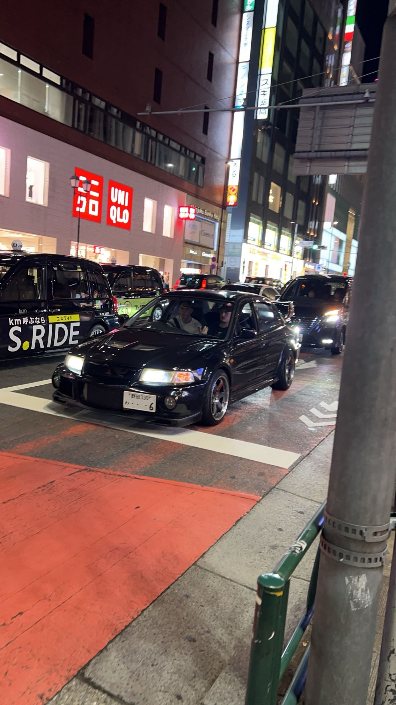
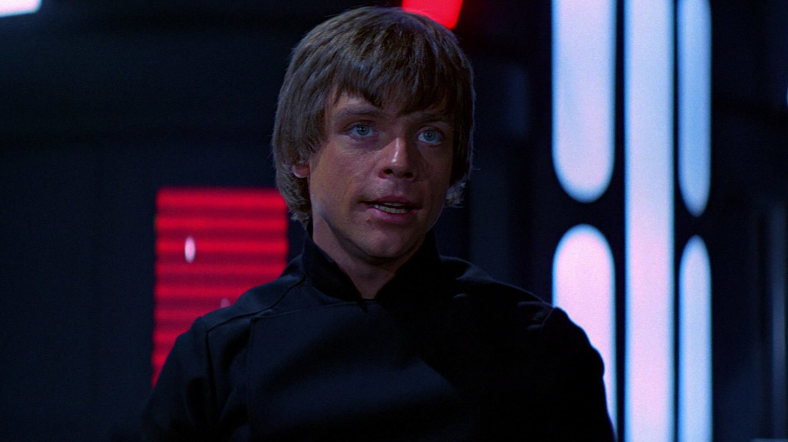
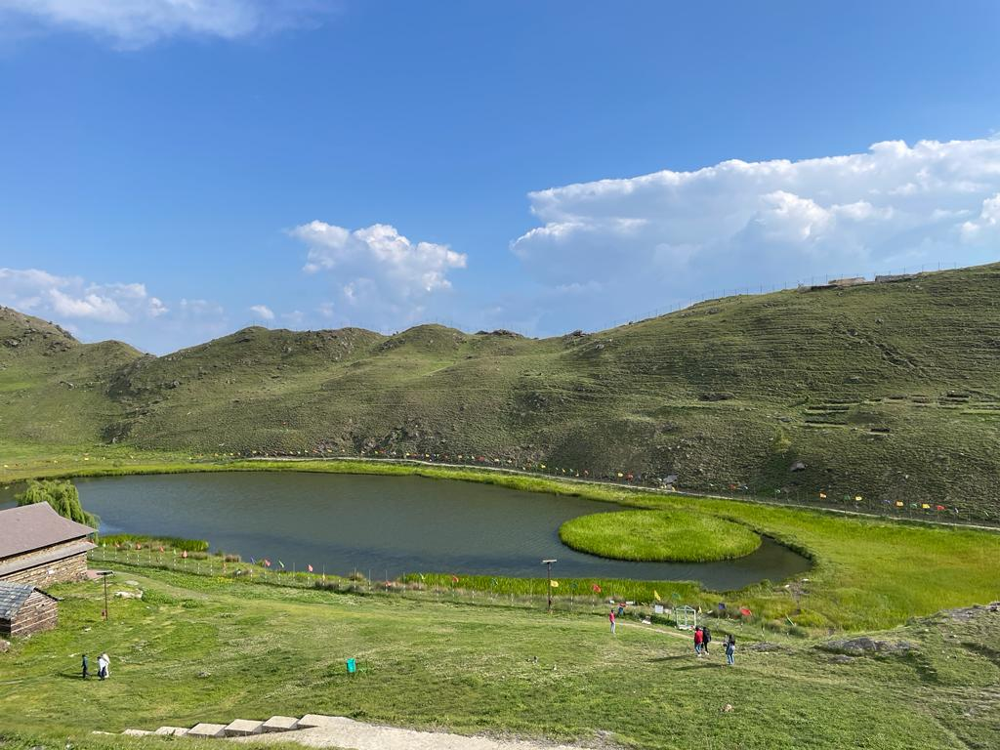
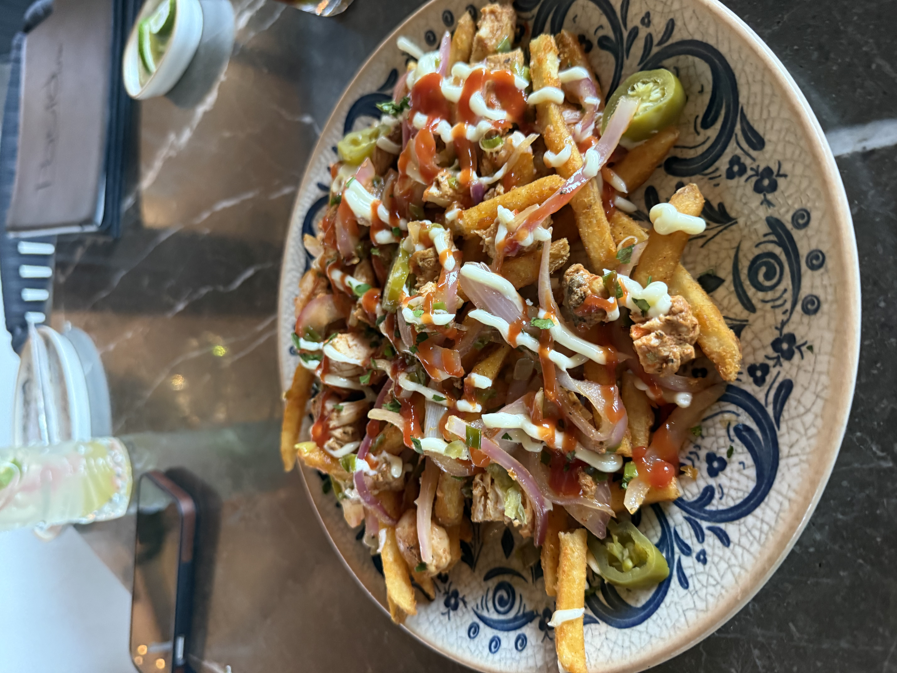
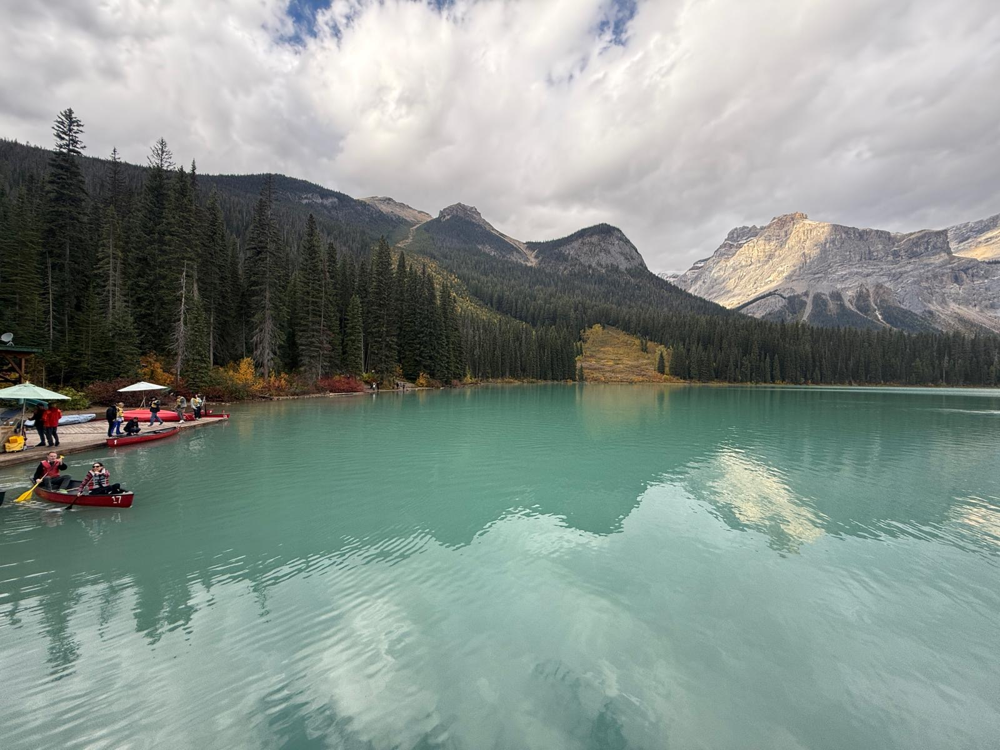

My Collection
A mix of places I have been, things I love, and moments I want to remember. Some of these are photos I took myself and some are things that mean a lot to me.

Car in Tokyo
Photo | Tokyo, Japan | Taken by me
I took this photo myself while I was in Tokyo. I spotted this car and had to stop and take a picture. Tokyo has some of the coolest car culture I have ever seen and this was one of those moments where I just had to capture it.

Luke Skywalker
Character | Star Wars | Jedi Knight
Luke Skywalker is one of my favorite characters from Star Wars. Growing up watching the films, his journey from a farm boy on Tatooine to becoming a Jedi Knight is one of the best stories ever told. He is a big reason why I got into science fiction.

Pond in India
Photo | Remote Location, India
This is a photo of a pond in a very remote part of India. There is something really peaceful about this place. It is the kind of spot that most people will never see and that is what makes it special to me.

My Car
Photo | Taken when I was 16
This photo was taken when I was 16. I parked my car in a nice spot with some trees in the background and thought it looked really good. It is one of those photos I look back on and smile because it reminds me of how excited I was to finally have my own car.

Loaded Fries from Lapasha
Food | Lapasha, Houston TX
Lapasha is one of my favorite spots to hang out in Houston. These loaded fries are something I always order when I go there. They are one of those things that just hits every time and I always end up recommending them to anyone who has not been.

Trail View in Colorado
Photo | Colorado | Taken by me
I took this photo while hiking a trail in Colorado. The view just stopped me in my tracks and I had to take a picture. It is one of those moments where no words really do it justice and the photo still does not fully capture how amazing it actually looked standing there.